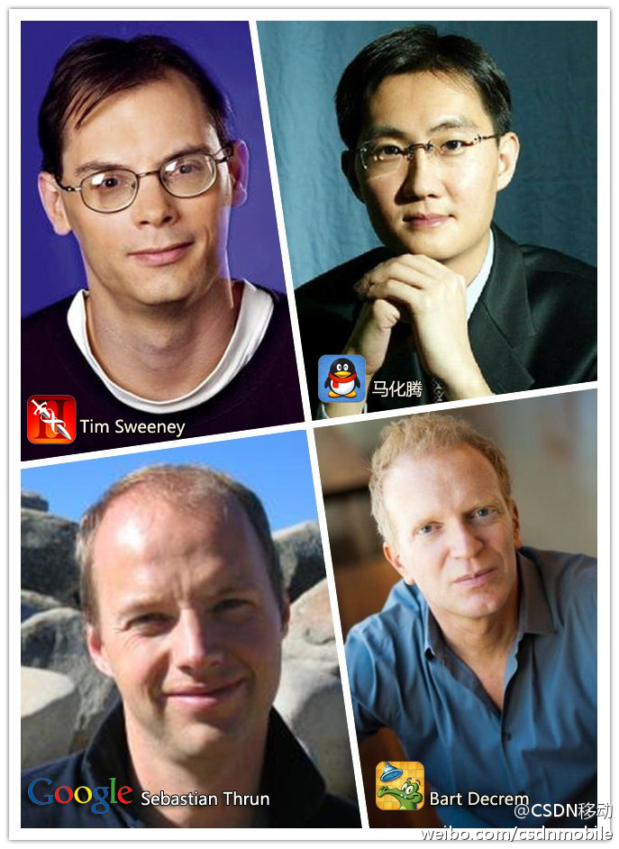

埋头干活也要抬头看路//@蒋涛CSDN: 置顶微博有公司一口气买了二十多张票 好样的不要让你的开发者只埋头干活 //@蒋涛CSDN:还在设计大会现场活动-互动设计体验 软硬结合展示 晚场开发者沙龙等 现场体验很重要！//@李开复: CSDN和创新工场第三年合办，国内外移动领袖，两天丰富内容，创业者开发者请关注！@CSDN移动:最牛的移动开发者盛会#MDCC#10月19-20日将在北京举行 Keynote演讲者：腾讯CEO马化腾；Udacity CEO，Google X实验室（Google眼镜）创始人Sebastian Thrun；Disney移动高级副总裁&总经理Where's My Water负责人Bart Decrem；Epic Games CEO，无尽之剑创始人Tim Sweeney。大会官网：网页链接 